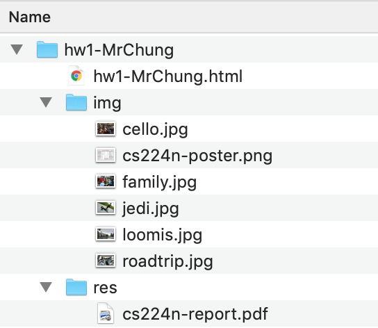

File Organization
- Make sure to rename your assignment folder to use your name, instead of just FirstnameLastname.
- All images should be placed inside a sub-folder named img
- All CSS files should be placed inside a sub-folder named css
- All JavaScript files should be placed inside a sub-folder named js
- If you wish to include any other resources, place those files in a sub-folder named res
- This is short for "resources," and it's a common standard among programmers
Example
Here is an example of a well-organized file hierarchy, taken straight from Mr. Chung's HW1. If there were CSS or JavaScript files involved, those would be in their own folders.
